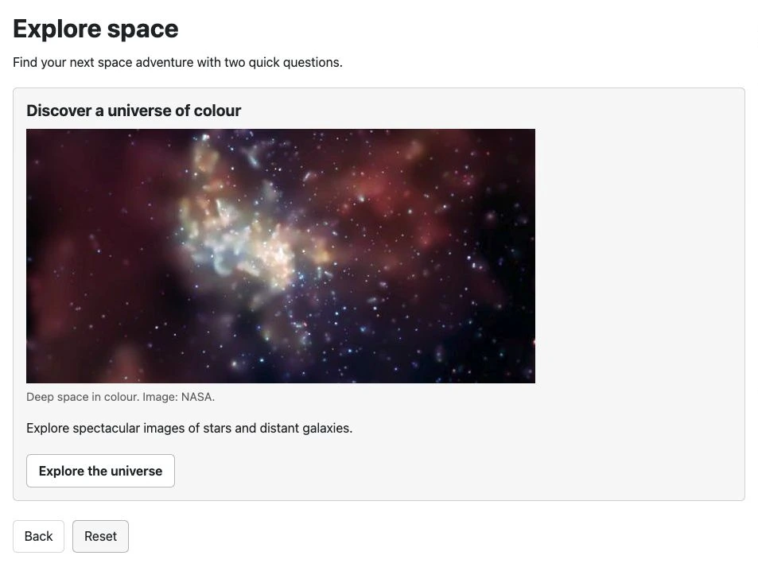

Article 10 · Existing article · /joomla-extensions/decision-tree-pro/decision-tree-compare-free-and-pro
Copy preview only. Live Joomla styling and working components are checked during staging.
Compare Decision Tree Free and Pro
Both editions include the visual canvas. Choose Free for one question-and-answer tool, or Pro for multiple trees, richer outcomes and reporting.
What changed in 1.4.0?
Free and Pro now share the canvas for arranging and editing questions, outcomes and connections. Pro also adds image blocks and previews from individual questions and outcomes. Analytics remain a Pro feature introduced in 1.3.0.
| Feature | Free | Pro |
|---|---|---|
| Decision trees per site | 1 | Unlimited |
| Visual canvas and form builder | Yes | Yes |
| Move cards, pan, zoom and auto arrange | Yes | Yes |
| Edit questions and outcomes from the canvas | Yes | Yes |
| Duplicate individual questions | Yes | Yes |
| Duplicate an entire tree | No | Yes |
| Preview the complete unsaved tree | Yes | Yes |
| Preview from a selected question | No | Yes |
| Preview a selected outcome directly | No | Yes |
| Path validation and warnings | Yes | Yes |
| Optional frontend step numbers | Yes | Yes |
| Basic text and call-to-action link | Yes | Yes |
| Rich heading, text, list and button blocks | No | Yes |
| Image blocks with alt text, captions and sizes | No | Yes |
| Anonymous analytics and CSV reports | No | Yes |
| JSON import/export and reusable templates | Yes | Yes |
| Display through an article or menu item | Yes | Yes |
Choose Free when
You need one guidance journey, with clear questions and an outcome containing text and an optional link. Free includes the canvas, the form builder, complete-tree previews and import/export.
Choose Pro when
You need several trees, want to reuse a complete workflow, or would benefit from illustrated outcomes and previews of individual branches. Pro also adds optional anonymous reports showing how the trees are used.

Pro is an add-on: install or update Decision Tree Free to 1.4.0 or later first, then install Decision Tree Pro 1.4.0. Keep both packages installed. Download Decision Tree Free if you need the base package.